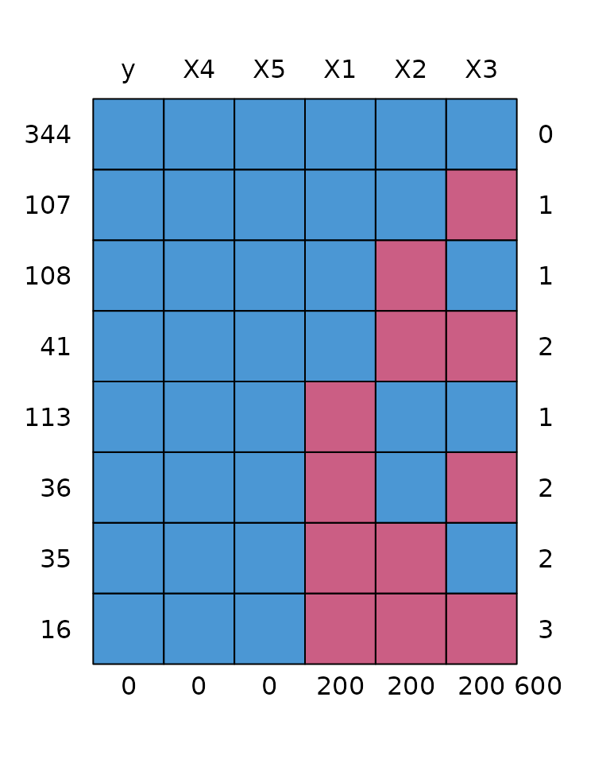

Missing data can occur at various stages during the development and
assessment of clinical prediction models. Given the focus on prediction,
validate removes rows where the outcome is missing. But it
is possible to write user-defined model and prediction functions to
allow for missing predictors. The example code below shows how to
implement two approaches to dealing with missing predictor variables:
stacked multiple imputation and pattern submodels. Both approaches are
implemented with glm but could be easily modified to work
with other model fitting functions.
The code below simulates some data with 5 predictors, 3 of which have missing values.
library(pminternal)
library(mice)
#>
#> Attaching package: 'mice'
#> The following object is masked from 'package:stats':
#>
#> filter
#> The following objects are masked from 'package:base':
#>
#> cbind, rbind
# make some data
set.seed(2345)
n <- 800
p <- 5
X <- matrix(rnorm(n*p), nrow = n, ncol = p)
LP <- -1 + X %*% c(-1, 1, -.5, .5, 0)
y <- rbinom(n, 1, plogis(LP))
mean(y)
#> [1] 0.33125
datcomp <- data.frame(y, X)
# add missingness
datmis <- datcomp
datmis$X1[sample(n, 200)] <- NA
datmis$X2[sample(n, 200)] <- NA
datmis$X3[sample(n, 200)] <- NA
# assess performance before introducing missingness
mod <- glm(y ~ ., data = datcomp, family = "binomial")
(comp_val <- validate(mod, method = "cv_o"))
#> apparent optimism corrected n
#> C 0.801121 -0.0013 0.802 10
#> Brier 0.164447 0.0000 0.164 10
#> Intercept 0.000000 -0.0320 0.032 10
#> Slope 1.000000 -0.0672 1.067 10
#> Eavg 0.000004 -0.0476 0.048 10
#> E50 0.000004 -0.0421 0.042 10
#> E90 0.000005 -0.0949 0.095 10
#> Emax 0.000009 -0.1058 0.106 10
#> ECI 0.000000 -0.4810 0.481 10Stacked multiple imputation
This approach is discussed by Janssen et
al. (2009) and Hoogland
et al. (2020) and involves the data used for ‘training’ the model to
be available at validation. Multiple imputation is used at development
and model coefficients are pooled across the
imputed data sets. At validation or testing, the new data is stacked
onto the data used for development and multiple imputation algorithm is
run on the combined data set. The two articles above point out that it
is important that the new data at validation does not dominate the
imputation model and therefore advocate doing stacked imputation one row
of the validation set at a time. Here we use the ignore
argument to mice::mice to omit the validation data from the
imputation model but still impute its missing observations. For each
individual in the validation/test dataset linear predictors are obtained
from each imputed dataset and then averaged before using the inverse
logit transform to convert to risk.
Note the functions below use the mice default arguments
(5 imputed datasets via predictive mean matching as all predictors are
continuous) but this could be easily tweaked. The functions also assume
that all variables should be used in the imputation model (including
y) but this could be changed via
predictorMatrix.
model_mi <- function(data, ...){
imp <- mice::mice(data, printFlag = FALSE) # 5 imputed datasets via pmm
fits <- with(imp, glm(y ~ X1 + X2 + X3 + X4 + X5, family=binomial))
B <- mice::pool(fits)$pooled$estimate # pooled coefs for predictions
# save pooled coefficients and the data to do stacked imputation at validation
list(B, data)
}
pred_mi <- function(model, data, ...){
# extract pooled coefs
B <- model[[1]]
# stack the new data on the model fit data (model[[2]])
dstacked <- rbind(model[[2]], data)
i <- (nrow(model[[2]]) + 1):(nrow(dstacked))
# impute stacked data
# use ignore argument to ensure the test data doesn't influence
# the imputation model but still gets imputed
imp <- mice::mice(dstacked, printFlag = FALSE,
ignore = seq(nrow(dstacked)) %in% i)
# get logit predicted risks for each imputed data set
preds <- sapply(seq(imp$m), \(x){
# complete(imp, x)[i, ] = get complete data set x and extract the
# validation data i
X <- model.matrix(~ X1 + X2 + X3 + X4 + X5, data = mice::complete(imp, x)[i, ])
X %*% B
})
# average logit predictions, transform invlogit, and return
plogis(apply(preds, 1, mean))
}
(mi_val <- validate(data = datmis,
model_fun = model_mi, pred_fun = pred_mi,
outcome = "y", method = "cv_o"))
#> apparent optimism corrected n
#> C 0.821 0.0020 0.819 10
#> Brier 0.160 -0.0007 0.161 10
#> Intercept 0.221 0.0058 0.216 10
#> Slope 1.267 -0.0446 1.312 10
#> Eavg 0.038 -0.0330 0.071 10
#> E50 0.034 -0.0202 0.054 10
#> E90 0.079 -0.0591 0.138 10
#> Emax 0.084 -0.1489 0.232 10
#> ECI 0.200 -0.9423 1.142 10A drawback of this approach is that it requires the development data to be available at validation/application. To avoid possible issues with sharing the development data, it might be possible to simulate data to have the same properties and missingness patterns to supply with the prediction model at deployment (assuming the MI algorithms could also be made available), although (to my knowledge) this approach hasn’t been assessed.
Pattern submodels
This approach involves fitting a separate prediction model for each pattern of missing data using only the data from that pattern (Mercaldo & Blume, 2020). For example, if the pattern “00100” signifies that variable 3 is missing and others are observed, a model omitting variable 3 is fit using rows where the missing pattern is “00100”. When testing the model on new data the model corresponding to the missing data pattern for each new observation is used.
As shown below we have 8 missing data patterns.
md <- md.pattern(datmis)
The code below creates a new column in datamis
containing the observed missing data pattern, mdp.
# store missing data pattern in data
# as this will be useful
datmis$mdp <- apply(datmis[, paste0("X", 1:5)], 1, \(x) paste0(as.numeric(is.na(x)), collapse = ""))
table(datmis$mdp)
#>
#> 00000 00100 01000 01100 10000 10100 11000 11100
#> 344 107 108 41 113 36 35 16The list submodels contains the models that will be
estimated using data from each missing data pattern. As the number of
submodels could be very large (up to
)
these could be created programmatically, though a large number of
submodels could be computationally prohibitive.
Following Mercaldo & Blume, in model_ps the pattern
submodel is estimated if there are at least
observations in a given pattern (in this case
),
otherwise the submodel is estimated using all observations with complete
data for a given submodel (a ‘complete case submodel’). This is
important to note as while
for all patterns in the development data this is not guaranteed when
resampling for bootstrap or CV. It is possible to include patterns that
are not observed in the development data, although this will be of
little value to internal validation as we only use the observed
patterns.
submodels <- list(
"00000" = y ~ X1 + X2 + X3 + X4 + X5,
"00100" = y ~ X1 + X2 + X4 + X5,
"01000" = y ~ X1 + X3 + X4 + X5,
"01100" = y ~ X1 + X4 + X5,
"10000" = y ~ X2 + X3 + X4 + X5,
"10100" = y ~ X2 + X4 + X5,
"11000" = y ~ X3 + X4 + X5,
"11100" = y ~ X4 + X5
)
model_ps <- function(data, ...){
# this example uses submodels as an additional argument to
# validate. But we could have put the submodels list in the
# model_sub function
dots <- list(...)
if ("submodels" %in% names(dots))
submodels <- dots[["submodels"]]
else
stop("no submodels")
patterns <- names(submodels)
# all patterns in data should be in submodels,
# but not necessarily vice versa (resampling
# could have omitted a pattern)
stopifnot(all(unique(data$mdp) %in% patterns))
fits <- lapply(patterns, \(pat){
f <- submodels[[pat]] # submodel formula
# if n with pattern > 2*p then fit submodel
n <- sum(data$mdp == pat)
if (n >= 2*nchar(pat)){
fit <- glm(f, data = subset(data, mdp == pat), family = binomial)
} else{
# otherwise fit on complete cases
fit <- glm(f, data = data, family = binomial)
# note this approach allows submodels for patterns not
# observed in development data. Though these will be
# fit using complete cases (obviously not pattern specific data)
}
fit
})
names(fits) <- patterns
fits
}
pred_ps <- function(model, data, ...){
patterns <- names(model)
# there needs to be a model for each pattern in data
stopifnot(all( unique(data$mdp) %in% patterns ))
patterns <- patterns[patterns %in% unique(data$mdp)]
preds <- lapply(patterns, \(pat){
i = which(data$mdp == pat) # for reordering later
pdat <- subset(data, mdp == pat)
p <- predict(model[[pat]], newdata = pdat, type = "response")
data.frame(y = pdat$y, p = p, i = i)
})
preds <- do.call(rbind, preds)
# reorder so same as original data
preds <- preds[order(preds$i),]
# all(data$y == preds$y)
preds$p
}
(sub_val <- validate(data = datmis,
model_fun = model_ps, pred_fun = pred_ps,
submodels = submodels,
outcome = "y", method = "cv_o"))
#> apparent optimism corrected n
#> C 0.769339 0.0029 0.766 10
#> Brier 0.176129 0.0000 0.176 10
#> Intercept 0.000000 -0.0201 0.020 10
#> Slope 1.000000 -0.0521 1.052 10
#> Eavg 0.000001 -0.0458 0.046 10
#> E50 0.000001 -0.0403 0.040 10
#> E90 0.000001 -0.0856 0.086 10
#> Emax 0.000002 -0.1358 0.136 10
#> ECI 0.000000 -0.5370 0.537 10